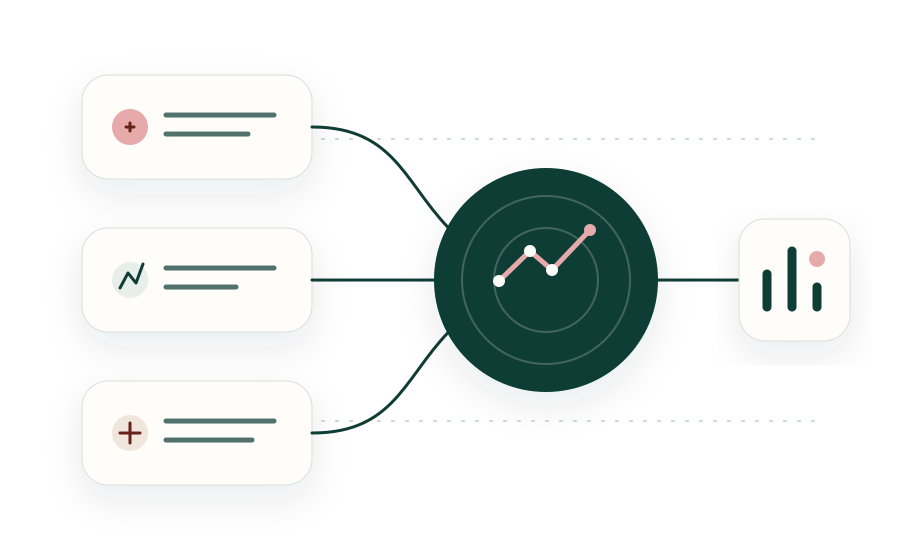

Epidemiology and risk
Study design, sampling, population analysis, risk factors and health dynamics.
Epidemiology consulting · Mexico + international collaboration
EPISUIS integrates health, production, diagnostic, molecular and spatial information to study complex problems in swine production, identify patterns and build useful solutions at the scale of each project.
The principle
One core offer
The problem defines the tools, not the other way around. Each project is structured around the question, system scale, available evidence and the decisions that need support.
Study design, sampling, population analysis, risk factors and health dynamics.
Integration and interpretation of laboratory results, sequences and molecular patterns.
Spatial distribution, links among units, regions, flows and production systems.
Analysis, visualization and digital tool development when the problem requires it.

Integration
Value emerges when clinical findings, production, laboratory data, population, space and time are read as parts of the same system. Analytical depth depends on what the project needs to answer.
Working scale
EPISUIS brings together analysis, interpretation and applied tools for health projects, producer organizations, institutions, and national or international technical collaborations. Scope can range from groups of farms and production networks to regional systems or multi-institutional projects.
Comparable information across farms, sites or production groups.
Relationships, flows, variation and patterns among connected units.
Health questions that require collective vision and reproducible methodology.
Multi-unit analyses, national or international collaboration and monitoring tools.
From information to solution
The output should answer the problem: it may be an epidemiological interpretation, map, sampling design, visualization, monitoring system or applied digital tool.
How we work
Define the problem, its scale and the question that actually needs an answer.
Bring together relevant health, production, diagnostic, spatial or molecular information.
Identify patterns, relationships, risks, inconsistencies and plausible explanations.
Translate analysis into conclusions, strategies, monitoring systems or tools.
EPISUIS
EPISUIS connects epidemiology, swine health, data analysis and tool development to structure questions, interpret evidence and build useful answers. The professional profile documents research, publications and academic work.
First contact
You do not need to decide in advance which analysis or tool is required. Share the context, scale and what your organization needs to understand; from there we can determine whether a consulting project is appropriate and what the next step should be.